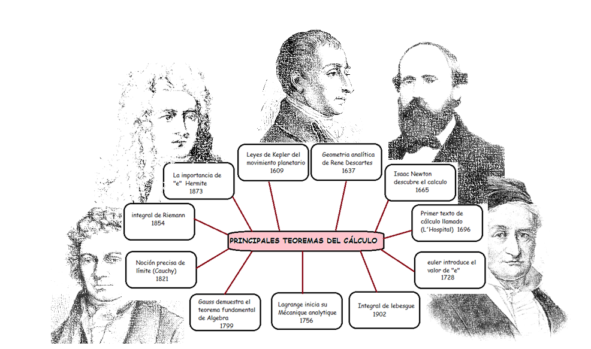

Las matemáticas nos han ayudado como herramientas, para poder entender y comprender el mundo real. Desde la aritmética hasta el cálculo integral y diferencial, han servido no solo para contar (aritmética), si no para poder diseñar los cohetes que se han lanzado al espacio, el cómo hacer que un transbordador deje de utilizar sus motores y se prefiera que utilicen un vuelo libre al ingresar a la tierra, esto es como planeador, se debe calcular la trayectoria del ingreso y esto se hace con el cálculo. Su dominio y/o aplicación facilita a la ciencia a resolver problemas complejos. Aunque hoy en día existan programas, calculadoras, o software, que nos facilitan la aplicación del cálculo, se debe tener el conocimiento del cálculo diferencial e integral, para poder entender mejor todos los aspectos científicos.
INTRODUCCION
